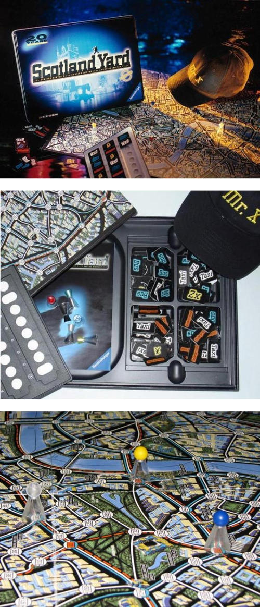

Règles du jeu
Il s'agit d'un jeu de cache-cache où une personne joue Mr. X et échappe au rôle SWAT joué par d'autres à Londres. Le jeu se joue sur un fond dans la ville de Londres. Il y a plusieurs endroits sur la carte reliés par des voies, des lignes de bus, des lignes de métro et de ferry. Avant le début de la course, tout le monde a reçu un nombre spécifique de billets de taxi, de bus et de train. Le policier spécial joué par le joueur est représenté par des pièces d'échecs et placé à divers endroits.
M. X se déplaçait secrètement à chaque tour et les SWAT se relayaient. Lorsque M. X ou M. SWAT voyage, ils doivent payer le billet correspondant en fonction de leur itinéraire de voyage. Les billets de taxi peuvent être utilisés presque partout et déplacés vers un autre endroit avec une connexion en ligne blanche. Les tickets de bus ne peuvent être utilisés que pour quitter la gare routière et se déplacer vers une autre gare routière connectée via la Ligne bleue. Les billets de train sont utilisés pour quitter la station de métro et se rendre à une autre station de métro reliée via la ligne rouge. Chaque billet peut permettre à M. X ou à l'agent de police spécial de voyager une seule fois, c'est-à-dire en utilisant un billet de bus ou de train, et M. X ou l'agent de police spécial doit s'arrêter à une station de bus ou de métro qu'il a rencontrée pour la première fois le long de la ligne.
L'action de M. X est spéciale. Chaque position sur le tableau a un numéro. Au lieu d'utiliser des pièces d'échecs, M. X a noté le numéro de destination sur le papier. M. X a également besoin d'un billet de voyage, donc lorsque M. X utilise un billet de train, il doit être dans l'une des stations de métro. M. X n'a pas à s'inquiéter de ne pas avoir de billets, car les billets utilisés par la police spéciale seront délivrés à M. X.En plus des billets réguliers, Mr. X peut utiliser "2x" et "Wildcard", mais le nombre est limité. "2x" permet à M. X de prendre un autre mode de transport en se déplaçant, c'est-à-dire de prendre une autre mesure. "Wild Clown" permet à M. X d'utiliser n'importe quel moyen de transport, y compris les ferries, donc lorsque M. X utilise "Joker Joker", la police spéciale vérifiera toujours si M. X est sur la Tamise.
M. X devrait venir régulièrement et placer des fragments transparents sur la planche étiquetée M. X. Par conséquent, l'équipe SWAT connaîtra toujours l'emplacement approximatif de M. X et n'aura pas besoin de s'exécuter. Une fois que SWAT et MX étaient dans la même position, MX a été arrêté et SWAT a gagné. Si M. X n'est pas arrêté après 24 déplacements ou si la police spéciale ne peut pas agir (par exemple, lorsqu'il n'y a pas de taxi, la police spéciale ne pourra pas se déplacer lorsqu'elle atteindra un point relié uniquement par la ligne blanche).